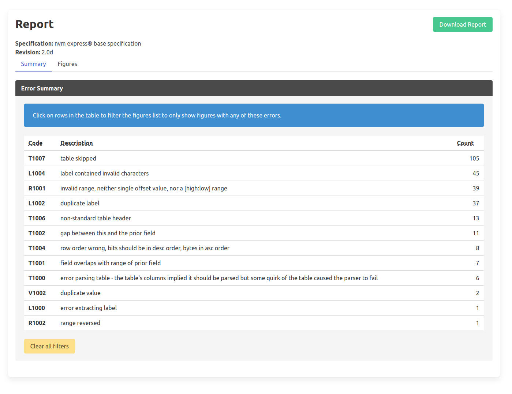

Welcome to NVMe-Spex’s documentation!¶
Welcome to the documentation for Spex, a tool for linting and extracting information on data structures in the NVMe specification documents.
To learn more about what Spex does, see What is Spex?. For an in-depth guide on setting up Spex on your system, see Setting up Spex.
NVMe-Spex combines two tools in one package: a command-line tool that runs directly against NVMe specifications in DOCX format and a web application that runs the command-line tool in the background. The web application focuses on linting the documentation and presenting a report that can assist in editing the specifications.
Getting started¶
You can use nvme-spex by running it as a Docker container. For setting up Docker on Windows, refer to the guides from Podman or Docker Desktop. On Linux, refer to the guide for “Install Docker Engine”.
Run with Podman¶
To start the web application, enter the following Podman command into your terminal (or PowerShell on Windows). This will start a Docker container running the web application, making port 8000 accessible on your host system.
podman run --rm -p 8000:8000 ghcr.io/samsungds/nvme-spex-webserver:latest webserver
For direct usage of the Spex command-line tool, use the following example command:
podman run --rm -v ~/Documents/specs/:/specs ghcr.io/samsungds/nvme-spex-webserver:latest run -s --output=/specs/output /specs/nvme_base.docx
This command works by mapping a directory on your host machine into the
container. Ensure that the relevant specifications are present in this directory
(e.g., ~/Documents/specs/ on Linux or something like C:/Users/Username/Documents
on Windows). The output of the run will be available at ~/Documents/specs/output
in this example.
Run with Docker¶
For running Spex with Docker on Linux or Docker Desktop, use the equivalent Docker commands as shown below:
docker run --rm -v ~/Documents/specs/:/specs ghcr.io/samsungds/nvme-spex-webserver:latest run -s --output=/specs/output /specs/nvme_base.docx
docker run --rm -p 8000:8000 ghcr.io/samsungds/nvme-spex-webserver:latest webserver
Installation with PIP¶
If you need to programmatically interface with Spex or prefer to run Spex directly on your host system, you can install NVMe-Spex using Python’s pip or pipx tool by running the following command in a terminal:
pipx install nvme-spex
Ensure that Python is version 3.11 or higher. Additionally, since Python doesn’t handle OS-level third-party dependencies, you will need to install libxml2 and xslt separately. You can find more information at libxml2 and xlst.
Web Application¶
When the docker container is successfully running the web application it can be accessed in the browser at http://localhost:8000.
The web application will show the following user interface:

Upload the specification .docx or .html file and press the submit button.

After processing is done the web-application will show the following report:
{kind=link}
Development of Spex¶
For the development of Spex, the following technologies are used: Python 3.11, libxml2, and libxslt. The source code is available on Github.
For an in-depth guide to developing Spex, see Development Guide.